import rpy2Reference
%load_ext rpy2.ipython%%R
options(repr.plot.width = 8, repr.plot.height = 8)%%R
library(ggplot2)
library(dplyr)Data
%%R
df <- read.csv("../../../delete/Coffe_sales.csv") %%R
head(df) hour_of_day cash_type money coffee_name Time_of_Day Weekday
1 10 card 38.7 Latte Morning Fri
2 12 card 38.7 Hot Chocolate Afternoon Fri
3 12 card 38.7 Hot Chocolate Afternoon Fri
4 13 card 28.9 Americano Afternoon Fri
5 13 card 38.7 Latte Afternoon Fri
6 15 card 33.8 Americano with Milk Afternoon Fri
Month_name Weekdaysort Monthsort Date Time
1 Mar 5 3 2024-03-01 10:15:50.520000
2 Mar 5 3 2024-03-01 12:19:22.539000
3 Mar 5 3 2024-03-01 12:20:18.089000
4 Mar 5 3 2024-03-01 13:46:33.006000
5 Mar 5 3 2024-03-01 13:48:14.626000
6 Mar 5 3 2024-03-01 15:39:47.726000- 비교 의미 없음
%%R
table(df['cash_type'])cash_type
card
3547 - 가격 순위 확인
%%R
df %>%
group_by(coffee_name) %>%
summarise(avg_price = mean(money, na.rm = TRUE)) %>%
arrange(desc(avg_price))# A tibble: 8 × 2
coffee_name avg_price
<chr> <dbl>
1 Hot Chocolate 36.0
2 Cappuccino 35.9
3 Cocoa 35.7
4 Latte 35.5
5 Americano with Milk 30.6
6 Americano 26.0
7 Cortado 25.7
8 Espresso 20.9Bar chart(money)
- 월 순서 정렬
%%R
df$Month_name <- factor(df$Month_name,
levels = c("Jan","Feb","Mar","Apr","May","Jun",
"Jul","Aug","Sep","Oct","Nov","Dec"))%%R
table(df['Month_name'])Month_name
Jan Feb Mar Apr May Jun Jul Aug Sep Oct Nov Dec
201 423 494 168 241 223 237 272 344 426 259 259 %%R
ggplot(df, aes(x = Month_name, y = money, fill = Month_name)) +
geom_col() +
labs(title = "Money by Month_name", x = "Month_name", y = "Money") +
theme_minimal()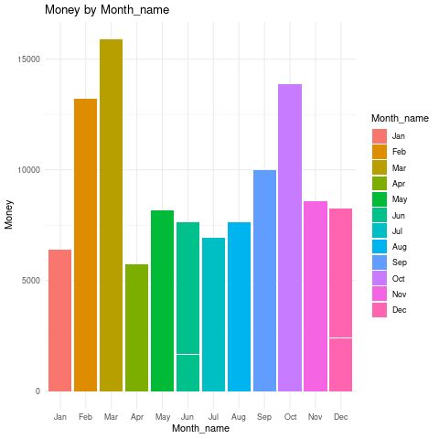
- 요일별 구분해보기
%%R
ggplot(df, aes(x = Month_name, y = money, fill = Weekday)) +
geom_col() +
labs(title = "Money by Month_name", x = "Month_name", y = "Money") +
theme_minimal()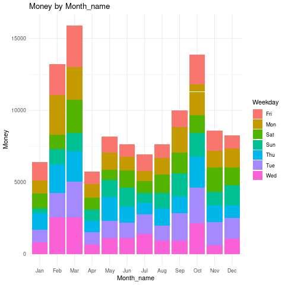
- 오전오후밤 구분해보기
%%R
ggplot(df, aes(x = Month_name, y = money, fill = Time_of_Day)) +
geom_col() +
labs(title = "Money by Month_name", x = "Month_name", y = "Money") +
theme_minimal()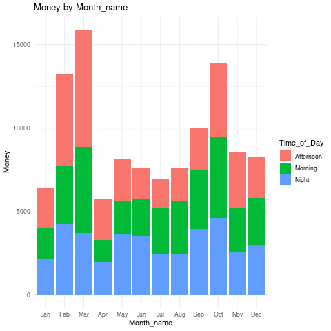
- 요일 순 정렬 factor
%%R
df$Weekday <- factor(df$Weekday,
levels = c("Mon","Tue","Wed","Thu","Fri","Sat","Sun"))%%R
table(df['Weekday'])Weekday
Mon Tue Wed Thu Fri Sat Sun
544 572 500 510 532 470 419 %%R
ggplot(df, aes(x = Weekday, y = money, fill = Weekday)) +
geom_col() +
labs(title = "Money by Weekday", x = "Weekday", y = "Money") +
theme_minimal()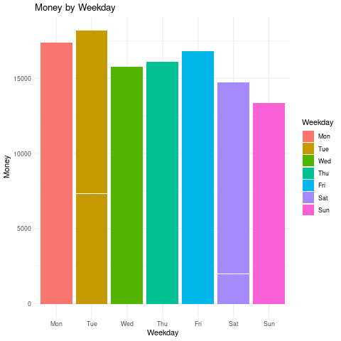
- 오전오후밤 구분해보기
%%R
ggplot(df, aes(x = Weekday, y = money, fill = Time_of_Day)) +
geom_col() +
labs(title = "Money by Weekday", x = "Weekday", y = "Money") +
theme_minimal()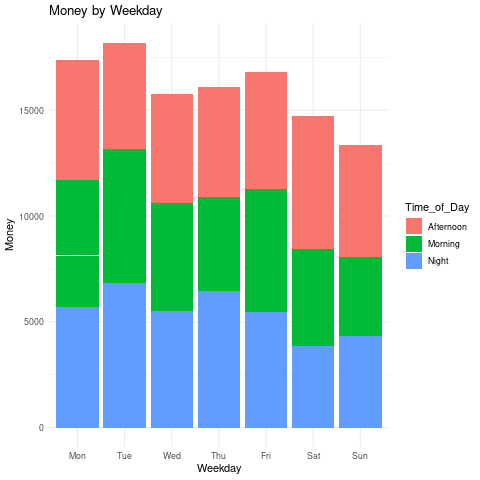
- 메뉴별 판매액
%%R
table(df['coffee_name'])coffee_name
Americano Americano with Milk Cappuccino Cocoa
564 809 486 239
Cortado Espresso Hot Chocolate Latte
287 129 276 757 %%R
ggplot(df, aes(x = coffee_name, y = money, fill = coffee_name)) +
geom_col() +
labs(title = "Money by coffee_name", x = "coffee_name", y = "Money") +
theme_minimal()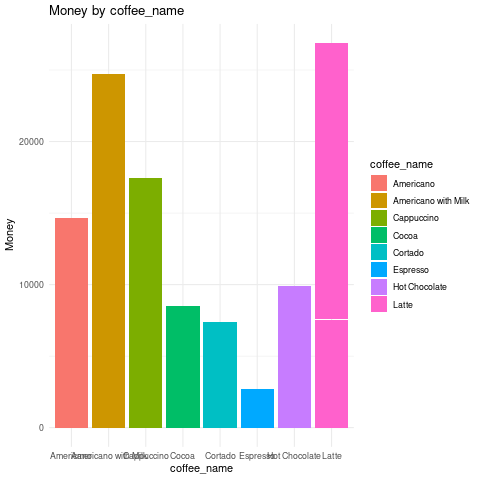
- 메뉴별 음료 정보 선호도 확인
%%R
df$Time_of_Day <- factor(df$Time_of_Day,
levels = c("Morning","Afternoon","Night"))%%R
table(df['Time_of_Day'])Time_of_Day
Morning Afternoon Night
1181 1205 1161 - 팔리는 수도 비슷
%%R
df %>%
group_by(Time_of_Day, coffee_name) %>%
summarise(count = n()) %>%
ggplot(aes(x = Time_of_Day, y = count, fill = coffee_name)) +
geom_col(position = "dodge") +
labs(title = "Coffee Choice by Time of Day", x = "Time of Day", y = "Count") +
theme_minimal()`summarise()` has grouped output by 'Time_of_Day'. You can override using the
`.groups` argument.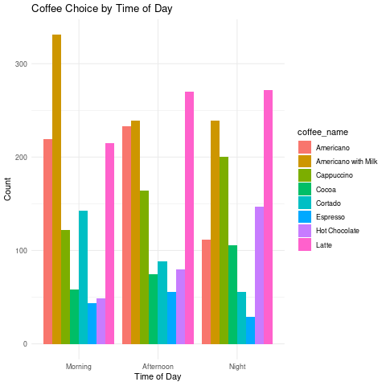
아침엔 americano with milk 압도적
- 라떼랑 아메리카노는 비슷
오후엔 라떼
- 아메리카노랑 아메리카노윗밀크는 비슷
밤에도 라떼
중앙값 기준으로 low, high 나눠서 값에 따라 판매액 차이가 있는지
%%R
median(df$money)[1] 32.82%%R
df %>%
mutate(price_group = ifelse(money >= median(money), "High", "Low")) %>%
group_by(Time_of_Day, price_group) %>%
summarise(n = n()) %>%
ggplot(aes(x = Time_of_Day, y = n, fill = price_group)) +
geom_col(position = "dodge")`summarise()` has grouped output by 'Time_of_Day'. You can override using the
`.groups` argument.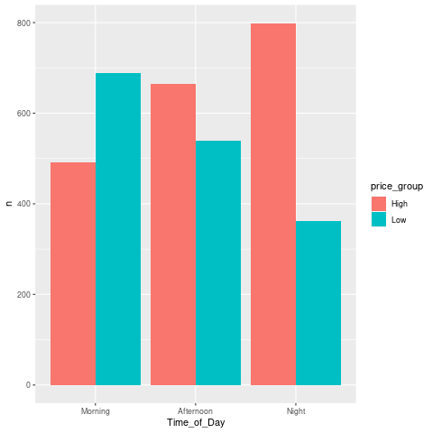
- 아침에는 저렴
- 저녁에는 비싼 음료 선호
Line chart
- 시간대별 판매액
%%R
table(df['hour_of_day'])hour_of_day
6 7 8 9 10 11 12 13 14 15 16 17 18 19 20 21 22
5 88 235 242 328 283 241 225 225 236 278 237 218 229 169 195 113 %%R
df %>%
group_by(hour_of_day) %>%
summarise(total_money = sum(money)) %>%
ggplot(aes(x = hour_of_day, y = total_money)) +
geom_line(color = "steelblue") +
geom_point(color = "darkred") +
labs(title = "Total Sales by Hour of Day", x = "Hour", y = "Sales") +
theme_minimal()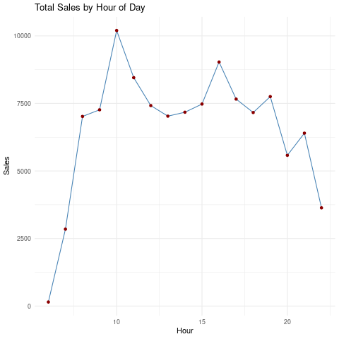
- 오전대가 가장 많이 팔림, 그리고 오후 15시넘어서
%%R
df %>%
filter(coffee_name == "Americano") %>%
group_by(hour_of_day) %>%
summarise(total_money = sum(money)) %>%
ggplot(aes(x = hour_of_day, y = total_money)) +
geom_line(color = "steelblue") +
geom_point(color = "darkred") +
labs(title = "Total Sales by Hour of Day", x = "Hour", y = "Sales") +
theme_minimal()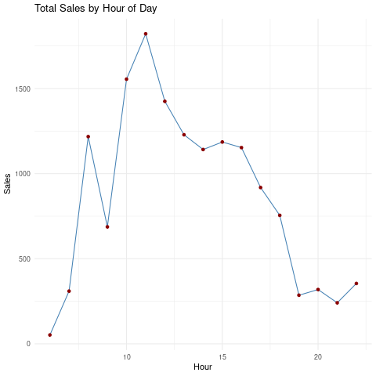
- 11시에 아메리카노가 가장 많이 팔렸다!
%%R
df %>%
filter(coffee_name == "Latte") %>%
group_by(hour_of_day) %>%
summarise(total_money = sum(money)) %>%
ggplot(aes(x = hour_of_day, y = total_money)) +
geom_line(color = "steelblue") +
geom_point(color = "darkred") +
labs(title = "Total Sales by Hour of Day", x = "Hour", y = "Sales") +
theme_minimal()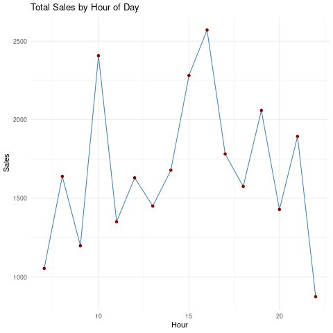
10,16시에 라때가 많이 팔리는 경향
주중 주말 판매액 비교
%%R
df %>%
mutate(Weekend = ifelse(Weekday %in% c("Sat","Sun"), "Weekend", "Weekday")) %>%
group_by(Weekend, hour_of_day) %>%
summarise(total = sum(money)) %>%
ggplot(aes(x = hour_of_day, y = total, color = Weekend)) +
geom_line(size=1)`summarise()` has grouped output by 'Weekend'. You can override using the
`.groups` argument.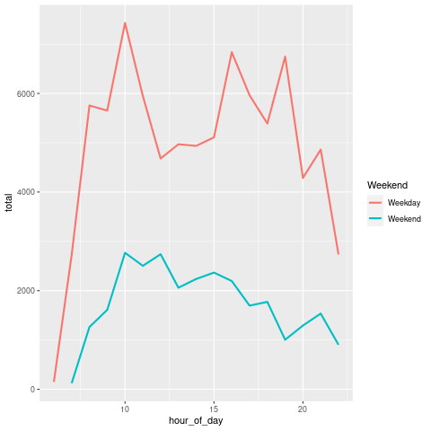
Heat map
- 시간대 및 요일별로 판매액 큰 구간 확인 가능
%%R
df %>%
group_by(Weekday, hour_of_day) %>%
summarise(total = sum(money)) %>%
ggplot(aes(x = hour_of_day, y = Weekday, fill = total)) +
geom_tile() +
scale_fill_gradient(low = "white", high = "red") +
labs(title = "Sales Heatmap by Hour & Weekday")`summarise()` has grouped output by 'Weekday'. You can override using the
`.groups` argument.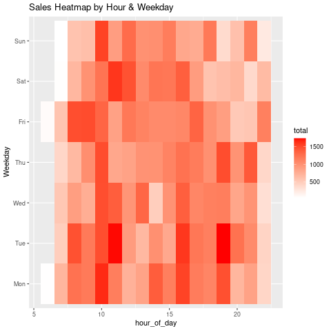